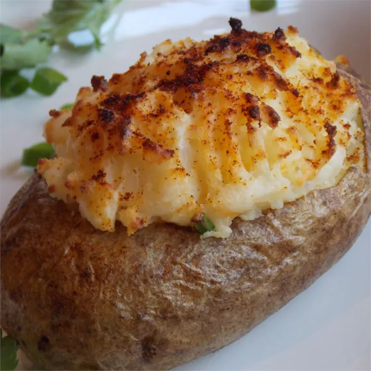

Description
Russet potatoes are the best for baking due to their thick skins that cook cripsy. They are a classic staple that has many benefits from providing energy to aiding in muscle recovery. As potatoes are grown with high amounts of pesticide, I would reccomend buying organic potatoes.
Ingredients
- Russet potatoes
- Coconut/Olive Oil
- Onion powder
Cooking Steps
- Rub potatoes clean of dirt under running water.
- Cut out the root eye like nodules from the potatoe to reduce solanine intake as well as the stem connection at the tip of the potatoes.
- Stab a hole through each potatoe with a knife or poke some holes with a fork to ensure they dont burst in the oven
- Oil up the potatoes in your choice of coconut oil or olive oil
- Preheat the oven to 450 degrees fahrenheit on the bake setting.
- Place the potatoes in the oven on a metal tray lined with tin foil
- Allow the potatoes to sit in the oven for 45-55 minutes at 450 fahrenheit and do not cover them. There is also no need to flip them
- Remove the potatoes from the oven and spice them with onion powder. Use caution for they will be hot!